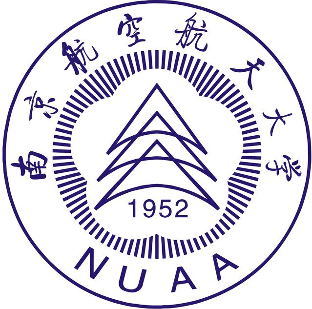

博士研究生 |
本人已于2022年6月从南京航空航天大学 机电学院获得本科学位。专业排名:(10/318)。
我的研究兴趣主要包括: 柔顺机构，智能材料应用，软体机器人，医疗机器人 等。
|  | 博士研究生 南京航空航天大学大学 (2019.9 ~ )
|
本科 南京航空航天大学 (2018.9 ~ 2022.7)
|
Development of a base-actuated three-rhombus configured remote center of motion mechanism for lumbar puncture (under review)
Yuzhou Duan, Jie Ling∗, Yayi Shen, Zhao Feng, Daojin Yao, Yuchuan Zhu
A Hub-type Compliant Piezo Drill for Cell Microinjection
Yuzhou Duan，Yunzhi Zhang，Jie Ling*，Zhao Feng，Yuchuan Zhu
IEEE ARM, 2022. [PDF]
A Three-rhombus Configured Remote Center of Motion Mechanism for Robot-assisted Surgery
Yuzhou Duan，Yunzhi Zhang，Yayi Shen, Jie Ling*，Yuchuan Zhu
YAC, 2022. [PDF]
一种细胞显微注射装置及其鲁棒阻抗控制方法.
段榆洲, 凌杰, 朱玉川, 陈龙, 郑述峰, 张铭洺.
国家发明专利, 申请号: 202111001734.8.
一种机液混合传动的微创手术机器人.
凌杰, 段榆洲, 朱玉川, 王彦文, 张洺铭, 张允执.
国家发明专利, 申请号: 202210299540.9.
一种压电驱动细胞显微注射装置及其自适应柔顺控制方法.
凌杰, 田佳淳, 朱玉川, 段榆洲, 王忠尉, 张允执, 张梦昊.
国家发明专利, 申请号: 202111393114.3.
一种二进制编码的数字式自感应压电叠堆装置及其工作方法.
凌杰, 陈龙, 朱玉川, 张洺铭, 段榆洲.
国家发明专利, 申请号: 202210167766.3.
机器人辅助穿刺麻醉过程力/位在线分析及位姿实时显示系统.
凌杰, 王彦文, 段榆洲, 张允执, 朱玉川.
软件著作权, 登记号: .
细胞穿刺过程力学分析系统.
凌杰, 张允执, 张梦昊, 段榆洲, 朱玉川, 陈龙, 郑述峰.
软件著作权, 登记号: 2022SR0037290.
机器人辅助穿刺麻醉跨介质接触建模与抗干扰控制研究(BK20210294)
主要参与; 经费:30万元
江苏省自然科学基金青年项目
基于压电振动调制的细胞微注射系统设计(No. 202110287128Y)
主持; 经费:1万元
国家级大学生创新创业项目
![[成绩单]](pdf/transcript_scuec.jpg){kind=link}